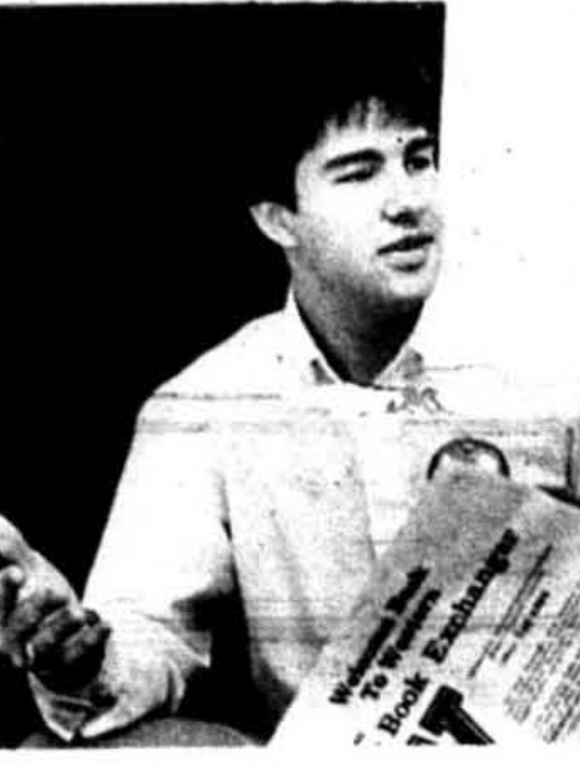

#
McKinney and Watkins win the ASG primary
Mitchell McKinney and Chris Watkins won the Associated Student Government presidential primary over a field that included candidate Stan Reagan.
Associated Students · academic year

Named explicitly as SGA president in the outgoing congress's own commendation bill, Bill 86-13-S (3 Apr 1986), which settles the name.
Before he was a candidate, McKinney wrote a Herald op-ed on 21 March 1985 headlined 'Associated Student Government Shouldn't Force Bill,' one of a pair of dueling pieces the paper ran on the same question - a sign he was already active in ASG's legislative debates a week before he entered the presidential race.
McKinney won the spring 1985 primary on a ticket with Chris Watkins on March 28, the Herald's headline saying the pair rode experience to their primary victory over a field that included candidate Stan Reagan. He was announced as the new Associated Student Government president in the Herald of April 4, in the same issue that reported an unnamed legislative group rejoining ASG. The record found so far does not confirm what office, if any, Watkins went on to hold.
In office, the congress abolished its own Finance Committee that September and, the following spring, wrote a Financial Advisory Council into the ASG bylaws in its place. The spring 1986 session was especially active: bills created major/minor college representative seats, revised the membership application process, asked Board of Regents members to attend an SGA meeting, sought chains for Pearce-Ford Tower windows, and pushed for a welcome sign at Normal Drive and University Boulevard.
In March 1986 McKinney pulled out of the race for a second term. The same issue carried a piece arguing that student government needed a strong leader, and the field he left behind grew to four candidates before Tim Todd won the presidency that April. The outgoing congress commended McKinney's work in Bill 86-13-S on April 3, and the WKU Board of Regents included a resolution honoring him, alongside outgoing president John D. Minton, at its meeting of August 8, 1986. A 1986 presidential proclamation he signed honoring English professor Thomas Jones survives in the SGA records.
Sources for this account
Everything the archive holds on Mitchell McKinney, gathered on one page.
Everyone the record shows in office this year. Each name goes to their own page, with every office they held and everything the archive says they did.
Ran on a primary ticket with Chris Watkins in spring 1985; the record found so far does not confirm what office, if any, Watkins held afterward. Withdrew from re-election in March 1986 and was commended by the outgoing congress that April.
Herald 60:49, 4 Apr 1985 PDFNamed as the incoming Treasurer on 9 April 1985 and reported the ASG balance as $2,045.59 at the final meeting of the year on 15 April 1986.
ASG minutes, 15 April 1986Signed the minutes of 15 April 1986, at which she thanked the Student Affairs committee for addressing the banquet invitations.
ASG minutes, 9 April 1985 and 15 April 1986Named as the incoming Administrative Vice-President by the outgoing president on 9 April 1985. He was still in the office at the last meeting of the year, 15 April 1986, at which he had no report.
ASG minutes, 9 April 1985 and 15 April 1986Also chaired the Public Relations committee. At the closing meeting of 15 April 1986 she thanked her committee, the Executive Council and the Congress members, and set out the schedule for the banquet and the organisation's anniversary activities.
ASG minutes, 15 April 1986Called College Representatives to the Academic Council meeting of 24 April 1986 to discuss the new English policy.
ASG minutes, 15 April 1986Brought the spring session's closing block of legislation to Congress on 15 April 1986, recommending eight bills for approval including the establishment of KISL as a standing committee, the amendment of the by-laws and the campus welcome sign, and recommending against 86-30-S on retaining the faculty evaluation system.
ASG minutes, 15 April 1986Congratulated the new Congress members elected that spring and thanked his committee for its work on the elections.
ASG minutes, 15 April 1986Chaired Student Rights in the year before he was elected president; his only recorded remark at the closing meeting of 15 April 1986 was to wish everyone a good summer.
ASG minutes, 15 April 1986Reported the Kentucky Intercollegiate State Legislature spring session a success, and was congratulated at the same meeting on being made Speaker Pro Tem of KISL. She became Administrative Vice-President the following year.
ASG minutes, 15 April 1986Abolished by the congress in September 1985.
Written into the ASG bylaws in April 1986, replacing the abolished Finance Committee.
The 4 things student government staged or ran for the campus this year, drawn from the chronology below. Every one of them also appears on the programmes page, which runs the whole sixty years together.
Mitchell McKinney and Chris Watkins won the Associated Student Government presidential primary over a field that included candidate Stan Reagan.
Mitchell McKinney was elected Associated Student Government president. The same issue reported that an unnamed legislative group had rejoined ASG.
The congress voted to abolish its own Finance Committee, a structural change later reversed in part when a Financial Advisory Council was written into the bylaws the following spring.
Bill 85-3-F, dated 8 October 1985, proposed that classes be cancelled because of snow as needed rather than on a fixed schedule. It is one of a run of small practical bills in Mitchell McKinney's term, filed a week after the bill creating the Financial Advisory Council.
Two weeks after abolishing its Finance Committee, Congress considered Bill 85-2-F, which proposed forming a Financial Advisory Council with access to Congress's financial records.
ASG's student discount cards finally went out in October after Phil Bewley of Parkland Publishers Inc. missed two August deadlines and the Warren County Commonwealth Attorney's Office was called in to find him. Bewley, reached by telephone in Nashville, said he believed President Mitchell McKinney had understood the cards would not be ready until 23 September, and blamed printer trouble. It was the second time in five years the same representative had left an ASG discount card in limbo.
College Heights Herald, Vol. 61, No. 13, 10 October 1985 PDF
The congress passed legislation calling for ASG to produce its own student discount card, one of several consumer-service ideas the group pursued that fall.
Kim Parson reported that ASG was reconsidering child care, a question the congress had first taken up in November 1983. The same issue carried a Herald opinion piece saying ASG needed to start representing students and a Kevin Knapp editorial cartoon on the organisation, and reported that the field of candidates for the university presidency had been narrowed to about 20.
About 20 votes separated the top two finishers in a fall ASG election, and the congress debated setting a grade-point average requirement for its own members. Both stories ran in the same late-October issue.
ASG was the only non-Greek group to enter November Nonsense, the variety show Chi Omega has staged since 1965, and took first place in the organisation division. Its skit followed an orange-faced, loud-mouthed "oompah" projected from 1965, when he was a star Western footballer, to 1985, when he became a potential candidate for the university presidency. Seven groups performed four-to-six minute skits on a "Back to the Future" theme, and the sorority raised about $800 for Hospice.
about $800 raised for Hospice
ASG returned to the question of alcohol on campus, an issue that had already produced a student poll and a campus pub debate in 1984. The congress opened a new study of the policy.
The congress discussed running a shuttle service from campus to the mall. It was one of several consumer-service ideas, alongside student discount cards, floated that fall.
Resolution 85-14-F, dated 3 December 1985, proposed creating a single card combining the student ID and the SuperCard. It followed Bill 85-12-F of 19 November, which asked that use of the SuperCard be extended across campus. The same night's Bill 85-15-F asked that ASG produce its own student discount card, after the outside printer's failures that autumn.
SGA Resolution 85-14-F, Student ID Card and SuperCard Merger
Student government defeated a campus lighting proposal in the last week of the fall semester. It was one of the few outright defeats of legislation reported that year.
ASG hosted the state Student Government Conference at Glasgow to promote involvement and the role of student government. President Mitchell McKinney and the organisation's roughly 100 members also joined the students, faculty and administrators who rallied in Frankfort in support of higher education in Kentucky. McKinney sat on the University Center Board and the Education Advisory Committee as well as the Board of Regents.
Administrative vice president Greg Elder told the Talisman that ASG counted three bills as its main accomplishments of the year: having the English 101 pass/fail moved, reducing the hours a student needed to live in Poland Hall, and producing the book exchange programme. ASG was one of five organisations whose presidents met once a month over breakfast, a group the yearbook called the Big Five, with Interhall Council, Spirit Masters, the Interfraternity Council and the Panhellenic Council.
As student regent, ASG president Mitchell McKinney took an active part in Western's search for a president, which produced Kern Alexander after the board screened applicants, visited candidates on their own campuses and interviewed the finalists. McKinney also sat as a voting member of the University Center Board and the Education Advisory Committee, led a congress of about 100 members, and told the Talisman he intended to go on to graduate school and teach at university level.
A bill calling for a fall break narrowly passed ASG. The proposal drew an opposing editorial in the next issue calling the extra break impractical and not needed.
ASG rejected a proposal to dismiss classes for the Martin Luther King holiday, one week after passing the fall-break bill. The King holiday question returned to the congress the following year.
ASG joined students, faculty and administrators from Western at the state-wide rally for higher education held at the Frankfort Civic Center on 6 February 1986 and sponsored by Kentucky Advocates for Higher Education. Chartered buses left from in front of Downing University Center for the three-hour journey, carrying Spirit Masters, cheerleaders, pep bands, reporters, teachers and administrators, and the administration wrote to teachers asking them to excuse students who went. Every university in the state was represented, and Governor Martha Layne Collins and former North Carolina governor James Hunt spoke.
Mitchell McKinney pulled out of the race for a second term as ASG president. The same issue carried a piece arguing that student government needed a strong leader.
Bill 86-8-S, considered by Congress in early 1986, proposed amending ASG's by-laws to allow voting by proxy.
Jackie Hutcherson reported that the filing deadline was Friday and that administrative vice president Greg Elder had filed for the ASG presidency, two days after Mitchell McKinney withdrew from the race. The same issue carried a Herald opinion piece by Steve Reagan arguing that ASG had to develop goals and priorities, and letters from Meredith Gainer and Loree Zimmerman defending the organisation.
ASG proposals asked for more library hours, and the spring elections were pushed back a week. The same issue carried dueling letters on whether the organization was in trouble.
The congress created major/minor college representative seats within its own membership.
Jackie Hutcherson reported that few people watched the four candidates for the ASG presidency debate. The paper printed profiles of Greg Elder, Andy Hollifield, Terry Malone and Tim Todd and then declined to back any of them, running an editorial headed that no candidate stood out and endorsing a fictional Joe Ideal instead. The same issue reported ASG proposing that faculty return tests to students, the subject of Bill 86-15-S filed nine days earlier.
The congress adopted a revised application process for SGA membership.
The congress asked that Board of Regents members attend and speak at one SGA meeting during their term.
The congress asked for chains to be placed on Pearce-Ford Tower windows so they could be opened.
The congress incorporated the Financial Advisory Council into the ASG bylaws, months after abolishing its own Finance Committee.
The outgoing congress passed a bill commending the work of SGA president Mitchell McKinney as his term ended.
Bill 86-34-S, dated 8 April 1986, requested that a campus map be placed at the Downing University Center. It was one of ten bills the outgoing congress filed that night, among them Bill 86-35-S asking for a scholarship for students from Santo Domingo de los Colorados, Bowling Green's sister city, and Bill 86-37-S for bulletin boards in the Downing University Center lift.
Bill 86-31-S, filed 8 April 1986, proposed amending ASG's by-laws on the expulsion of representatives, tied to attendance at the Academic Council.
SGA Bill 86-31-S - Amendment of By-Laws for Expulsion of Representatives
The Herald reported that pranks and accusations had marred the ASG races, and printed the election results in the same issue. Tim Todd emerged from the field as the new president.
After two women were assaulted within a fortnight in April, ASG passed a resolution on 10 April asking for more lighting in eleven places on campus. A Herald editorial on 15 April backed it, noting that a new lamppost cost between $500 and $750 and about $36.50 a year to run, "a small price to pay for safety." The same spring saw more women using the escort service and enrolling in the university's self-defence class.
$500 to $750 per lamppost; about $36.50 a year to run
The congress pushed for a welcome sign to be placed at the intersection of Normal Drive and University Boulevard.
The congress passed a bill commending outgoing WKU president John D. Minton for his service to the university.
Bills and resolutions from this session, held as files on this site.
Every source cited above, once, with the number of entries that rest on it.
Preferred citation
“1985-86,” SGA 60: Student Government at Western Kentucky University, 1966–2026, revised 19 August 2026, y/1985-86.html
Where a name on this page differs from the plaque in the SGA Chambers, the difference is explained above and recorded on the corrections page.